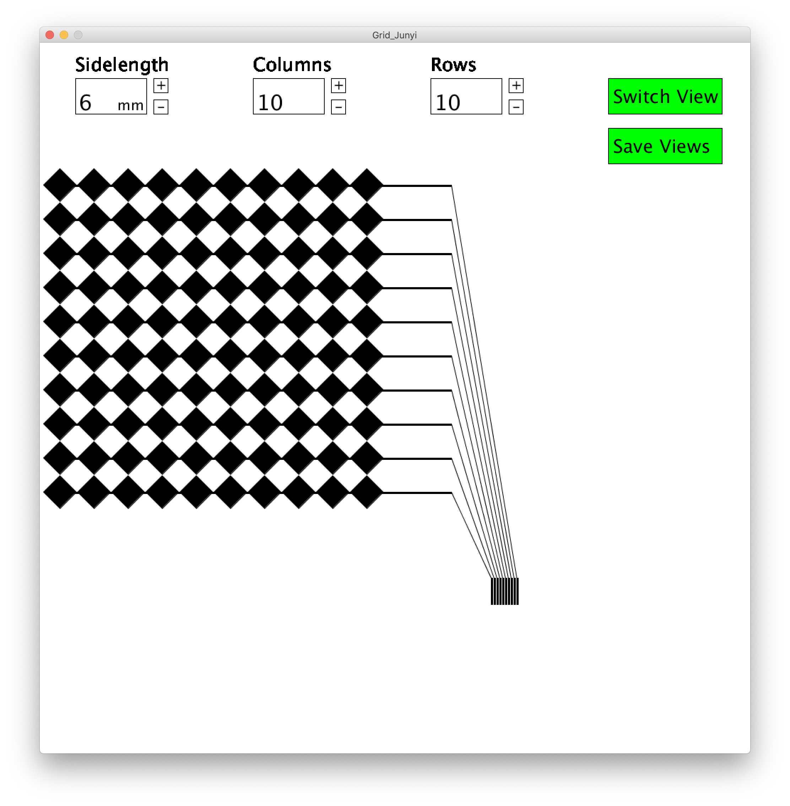

6.810 Engineering Interactive Technologies (fall 2020)
Problem Set Series: Multi-Touch Pad
Problem Set 1
In the first part of the problem set, you are going to do the following steps:
- (1) Create Processing User Interface for Generating Fabrication Files
- (2) Inkjet Print Top and Bottom Electrode Layers
- (3) Assemble Top and Bottom Electrode Layers
- (4) Connect Top and Bottom Electrode Layers to FCP connectors
- (5) Build Multi-Touch Sensing Circuit
Check before you start: Do you have all the hardware?
Before you get started, check if you have all of the following in your bag:
- ESP32 microcontroller, breadboard, and wires
- 8 x 100Kohm resistors (one for each receiver pin)
- one multiplexer
- two FPC connectors
In addition, the following items will be provided when you come in for printing and assembling the multitouch pad:
- two transparent sheets for conductive inkjet printing of the top and bottom electrodes
- tattoo transfer paper that acts as a thin layer of glue to attach the top and bottom electrode sheets to each other
- one transparent sheets to cover up the top electrodes
(1) Processing User Interface for
Generating Fabrication Files
In the first part of this problem set, you will write a user interface in Processing that will automatically generate the fabrication files for making multi-touch pads of different dimensions. In particular, a user will be able to input parameters, such as the number of electrodes of the multi-touch pad and then automatically receive the matching fabrication files, i.e. 2D drawings of the required circuits in .pdf file format that the user can then send to their 2D printer for conductive inkjet printing. You will implement this interface in Processing from scratch.
We will be using the classical two-layered diamond pattern that is commonly used for mutual-capacitive touch sensing.
As explained in lecture, this means that your multi-touch pad has two layers that are printed separately.
One layer contains the rows of electrodes, the other layer contains the columns.
Each row/column consists of multiple electrodes and has a single wire at the end.
Once both sheets are printed, you layer them on top of each other (with a bonding & isolation layer in between) to build the final circuit.


Required User Interface Functionality
In the user interface, the user should be able to select:
- the desired number of electrodes in x-direction (default value: 10 electrodes)
- the desired number of electrodes in y-direction (default value: 10 electrodes)
- the edge length of the electrodes (diamond shape) in mm (default value: 6mm)
Other parameters that you need to set in your code but don't have to display in the UI, are:
- the spacing between adjacent electrodes in mm (default value: 1mm)
- the spacing between non-connected electrodes, i.e. rows and columns, in mm (default value: 1mm)
- the thickness of the wires inside of multi-touch pad that connect electrodes, in mm (default value: 0.3mm)
- the thickness of the wires outside of multi-touch pad that connect to FPC connectors, in mm (default value: 0.5mm)
- the spacing of wires on the FPC connector in mm (we are using the 1mm in FPC spacing, notice that the board has two sides and could also be used for 0.5mm if the 0.5mm connector was soldered on the other side. For more details, please look at the data sheet of the FPC connector here)
The user interface should only allow the user to select only reasonable numbers using the input elements:
- for each input field listed above, think about what is a reasonable lower and upper bound (i.e. min/max values) given the hardware you have available for the pset
- write a short explanation why you picked the lower/upper bounds for each field and submit it using this google form (before you fill out the google form, you may want to read the rest of pset1 to understand more about the hardware you have available)
- implement the lower/upper bounds in your user interface, i.e. the user should either not be able to select values outside the lower/upper bounds (i.e. you only offer a selection of valid numbers) or if your UI allows to enter any value even invalid ones, then your user interface needs to show the user a warning that the value is invalid and reset to the last valid value
Finally, the user interface should have a preview and export function:
- one button to switch between the design's top and bottom layer view, i.e. clicking the button should either show the top layer or the bottom layer so the layers can be looked at individually
- one save button, which when clicked saves the generated electrodes into two .pdf files (called bottom-electrodes.pdf and top-electrodes.pdf), one for the rows of electrodes (bottom sheet) and one for the columns (top sheet)
- make sure the exported files have all settings correctly set for conductive inkjet printing (if you don't remember, go back to Lab1)

The switch top / bottom view function should look like something similar to the following:
Setting the Processing window to the right resolution for printing
Since the multi-touch pad design is printed in millimeter but Processing handles everything in pixel, you first need to figure out a conversion factor between pixel and millimeter to determine the Processing window size.
Note that Processing uses a fixed dots per inch measurement.
On Windows, you are most likely to encounter a 96 dpi resolution.
On Mac, you are also most likely to encounter a 96dpi resolution but it may also be 72dpi. Wikipedia thinks it is 72dpi, however, according to our own tests on Mac, it was 96dpi, i.e. the same as on Windows.
(Note that the resolution of the Processing sketch window is different from the screen resolution pixel per inch, which usually are around a couple hundred nowadays, this is set by the operating system and mainly used for programs heavy on typography like Microsoft Word).
If you are unsure about the right resolution, you can do the following test:
Create a window in Processing of any size and draw a rectangle into the window using a fixed pixel size (e.g. rect(96,96) = 96 x 96 pixels).
Export the square using your implemented .pdf export function and print it out with a normal inkjet printer. While printing make sure you don't scale the image and instead print it with the "Print Entire Image" setting which keeps it at its exported size.
Next, measure the output with a ruler and determine how many inch it is (e.g., let's say it was 1 inch).
Finally, you can calcuate Processing's dpi by calculating the pixel to inch conversion factor based on this, which in our case is 96dots/1 inch = 96dpi.
Since our inputs are in mm, you still need to convert the dpi to dots per mm. For this, simply divide by how many millimeters are one inch (1 inch = 25.4mm). Thus, we will have 96dpi / 25.4mm = 3.78 dots per mm.
So if you draw a rectangle of 100 pixel it will be 100pixel / 3.78 dots per mm = 26.46mm.
Drawing the Top and Bottom Electrodes and Wires
You may find it helpful to look at the following Processing classes to draw the top and bottom electrodes and wires:
Creating User Interface Input Elements
For the UI elements, we do not use an external library and instead use a simple trick:
We draw the UI elements as regular graphic shapes (e.g. rectangles), add a text where needed to display numbers, and then use mouse-click and drag events to update the UI elements.
Testing your Program
When you are done, make sure you test your user interface by exporting several different multi-touch pad sizes, e.g. 4x10, 12x6, 5x5.
If you are unsure if everything has the right dimension, use a regular color printer to print out your design and measure it with a ruler.
Upload your Code and Design Files, Show Hardware to TA
For grading, please upload the following to your google drive student folder:
- the .pde file of your Processing program
- the two .pdf files you used for conductive inkjet printing
- 3-5 photos showing your assembled circuit from different perspectives (include top view + side views)
Grading
We will give 25 pts in total:
- does the Processing UI have input elements that correctly set the number of electrodes in x-direction, the number of electrodes in y-direction, and the edge length of the electrodes, or are these values hardcoded in the code? (5 pts)
- does the Processing UI have lower and upper bounds for each input field? are the selected lower and upper bounds well reasoned based on what makes sense given the hardware parts you have available for the pset, the sensing principle we use, and given that a human is touching the multi-touch pad? (5 pts)
- does the Processing UI export function export a drawing in the correct dimensions into two seperate .pdf files that are named correctly and that have the correct settings for conductive inkjet printing? are the toggle functions for showing/hiding layers implemented? (5 pts)
- did you finish assembling your multi-touch pad, i.e. did you inkjet print both the top and bottom electrode layer, glued them together, and connected the FPC chips? (5 pts)
- did you correctly build the multi-touch sensing circuit using the multiplexer, resistors and ESP? (5 pts)
Generating Fabrication Files